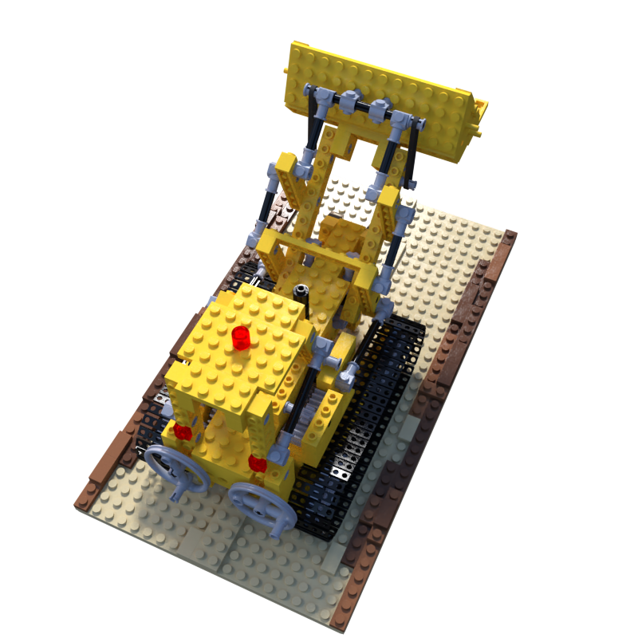
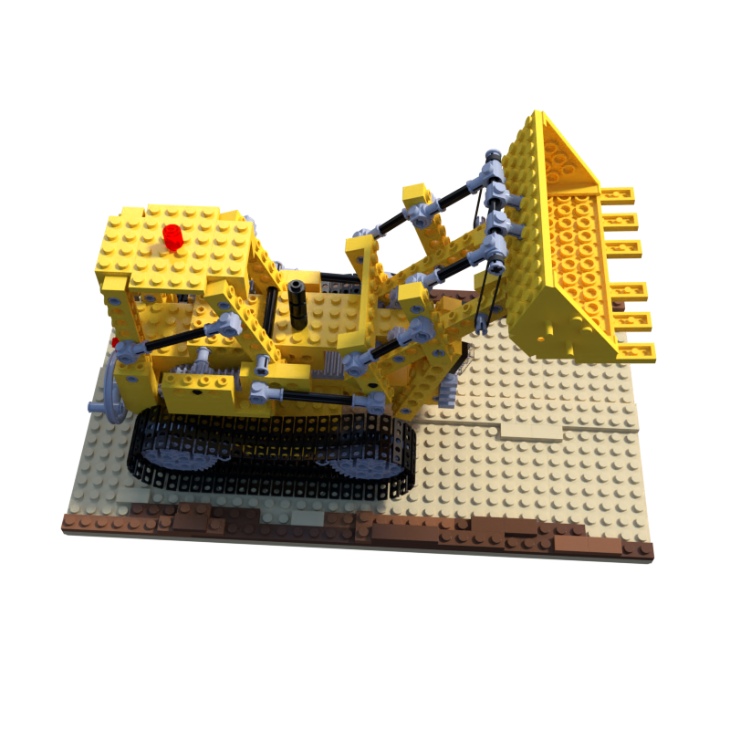
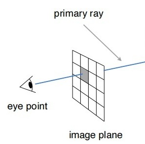
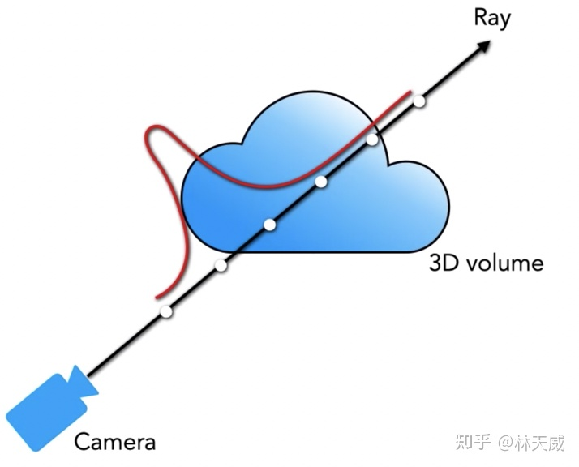
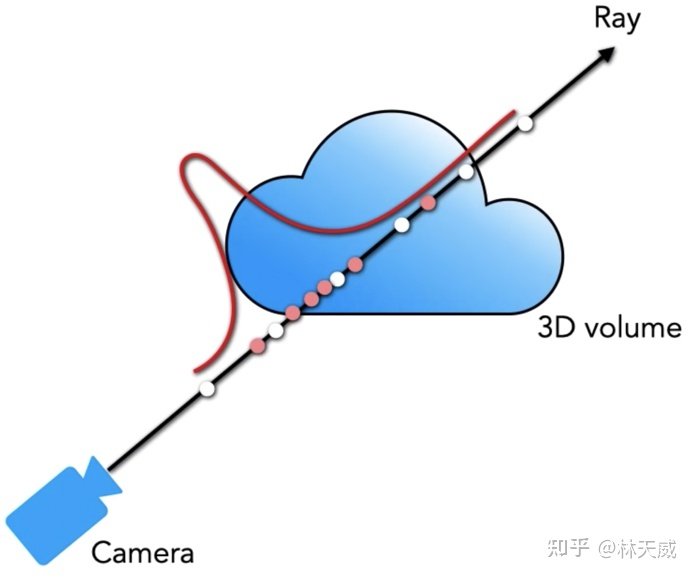
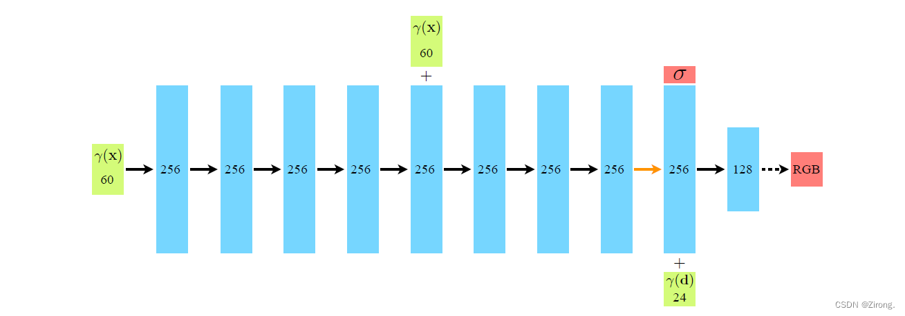

曹耕晨
2023-11-28
基于计图 (jittor) 复现 InfoNeRF (Kim, Seo, and Han 2021), 在乐高模型上跑通.
 |
|
 |
当面检查 + 提交到网络学堂.
检查时间: 考试周, 具体时间请留意网络学堂通知.
检查要求: 展示训练结果, 讲解基本原理
提交截止时间: 考试周最后一天.
提交文件:
给出在已知视角场景的一系列图像信息 (包括拍摄到的图像, 以及每张图像对应的相机参数), 合成新视角下的图像.
Nerf 的全称是 Neural Radiance Field, 整个过程分为两部分:
辐射场每个点有自己的亮度和体密度. 想计算一个像素的颜色, 只需要计算视点到像素的连线上每个点对颜色的贡献.

(图片来源于知乎 (“计算机图形学（一）-Ray Tracing Basic - 知乎” n.d.))
Nerf 用体渲染公式来 (Kajiya and Von Herzen 1984) 计算每个点的贡献:
辐射场的体密度只跟位置 \(\vec{r}\) 有关, 亮度 \(\vec{c}\) 与视角 \(\vec{d}\) 跟位置 \(\vec{r}\) 有关.
考虑一条光线 \(\vec{r}(t) = \vec{x}+ t \vec{d}\), 在直线上一点 \(\vec{r}(t)\) 发出的光强是 \(\sigma (\vec{r}(t)) \vec{c}(\vec{r}(t), \vec{d}) \mathrm dt\), 从该点到视点发生的衰减系数 \(T(t) = \exp\left(-\int_{0}^{t} \sigma(\vec{r}(s)) \mathrm ds\right)\), 于是我们知道这一点对像素的颜色贡献为 \(T(t) \sigma (\vec{r}(t)) \vec{c}(\vec{r}(t), \vec{d}) \mathrm dt\). 对光线上的每个点做积分即可得到像素的颜色
\[C(\vec{x}, \vec{d}) = \int_{0}^{+\infty} T(t) \sigma (\vec{r}(t)) \vec{c}(\vec{r}(t), \vec{d}) \mathrm dt\qquad{(1)}\]
假设采样点是 \(t_{1}, \ldots, t_{N}\), 那简单计算后可以知道式 1 的离散结果为
\[\hat{C}(\vec{x}, \vec{d}) = \sum_{i = 1}^{N} T_{i} \left(1 - \exp(-\sigma_{i} \delta_{i})\right) \vec{c}_{i}, \delta_{i} = t_{i + 1} - t_{i}\]
其中 \(T_{i} = \exp\left(-\sum_{j = 1}^{i - 1} \sigma_{j} \delta_{i}\right)\).
如果对光线进行等间隔采样, 那只能学到采样点上的信息, 所以在每个等长度区间里进行随机采样, 这一步称作粗采样.

空间中有大量位置体密度几乎为 \(0\), 因此如果只采用均匀采样会损失很多信息. 我们在粗采样时会得到一系列权重 (见下式). 我们基于这些权重 \(w_{i}\) 再进行一次细采样.
\[\hat{C}(\vec{x}, \vec{d}) = \sum_{i = 1}^{N_{c}} w_{i} c_{i}\]

从位置跟视角得到辐射场 \(F_{\Theta}: (\vec{x}, \vec{d}) \mapsto (\vec{c}, \sigma)\) 这一步由神经网络完成.
可以把神经网络理解为一个含参数的函数 \(F_{\Theta}\), 训练过程就是通过一些方法 (例如梯度下降等) 来估计参数 \(\Theta\). 得到一个合适的 \(\Theta\) 后就可以用 \(F_{\Theta}\) 从输入计算输出.
估计参数 \(\Theta\) 时, 我们需要定义出一个优化目标 \(L(\Theta)\), 称之为损失函数. 损失函数的值越小, 我们对 \(\Theta\) 的估计越准.
假如我们当前对 \(\Theta\) 的估计是 \(\Theta_{k}\), 同时求出梯度方向 \(g = \frac{\mathrm dL}{\mathrm d\Theta}\), 那我们只需要沿着 \(-g\) 方向前进一小步就能减小 \(L(\Theta)\), 即
\[\Theta_{k + 1} = \Theta_{k} - \alpha \frac{\mathrm dL}{\mathrm d\Theta}\]
不断重复这一过程, 我们可以实现对神经网络的优化.
中间的细节可以参考计图教学套件 https://cg.cs.tsinghua.edu.cn/teaching, 里面讲解了神经网络基础知识入门.
深度神经网络倾向于学习低频的函数, 为了让 NeRF 能学到高频特征, 我们除了位置跟方向信息 \((x, y, z)\) 还要向网络中输入它们变换得到的高频量
\[\gamma(p) = \left(\sin(2^{0} \pi p), \cos(2^{0} \pi p), \ldots, \sin(2^{L - 1} \pi p), \cos(2^{L - 1} \pi p)\right)\]
这个函数应用在位置跟方向信息的每一个分量上, 例如位置信息 \(\vec{x}= (x, y, z)\) 变换为 \((\gamma(x), \gamma(y), \gamma(z))\).
在论文中, 对坐标的变换取 \(L = 10\), 对视角的变换取 \(L = 4\).

对于给定的光线集合 \(R\), 我们会得到粗采样渲染结果 \(\hat{C}_{c}\) 跟细采样渲染结果 \(\hat{C}_{f}\), 我们希望最小化这些渲染结果与给出的参考图像 \(C\) 的差别. 所以定义损失函数为
\[L = \sum_{\vec{r}\in R} \left\|\hat{C}_{c}(\vec{r}) - C(\vec{r})\right\|_{2}^{2} + \left\|\hat{C}_{f}(\vec{r}) - C(\vec{r})\right\|_{2}^{2}\]
Nerf 需要很多个视角才能渲染得到比较好的效果, 我们希望通过比较少的视角得到还不错的结果.
考虑额外的信息, 比如光线的信息熵. 这是因为只有少部分光线击中了采样点, 剩下的部分只起到噪音的作用. 最小化光线的信息熵有助于减小重建过程中的噪音.
假设光线 \(\vec{r}\) 上的采样点为 \(\vec{x}_{1}, \ldots, \vec{x}_{N}\), 光线的信息熵定义为
\[H(\vec{r}) := -\sum_{i = 1}^{N} p(\vec{x}_{i}) \log p(\vec{x}_{i}), p(\vec{x}_{i}) := \frac{1 - \exp(-\sigma_{i} \delta_{i})}{\sum_{j = 1}^{N} 1 - \exp(-\sigma_{j} \delta_{j})}\]
此外, 对于没有击中任何物体的光线, 信息熵自然是 \(0\), 我们在优化的时候需要丢弃掉几乎不经过任何物体的光线, 即
\[Q(\vec{r}) = \sum_{i = 1}^{N} 1 - \exp(-\sigma_{i} \delta_{i})\]
小于某个 \(\epsilon\) 的光线.
通过最小化光线的信息熵可以定义出新的损失函数
\[L_{\text{entropy}} := \frac{1}{|R|} \sum_{\vec{r}\in R} M(\vec{r}) H(\vec{r})\]
\[M(\vec{r}) := \begin{cases} 1 & Q(\vec{r}) > \epsilon \\ 0 & \text{otherwise} \end{cases}\]
其中 \(R\) 是光线集合. 特别的, 该集合中还可以包含来自没有参考图像的视角的光线, 因为信息熵在定义时不依赖于 ground truth 图像, 也就是说我们可以对没有参考图像的画面也定义信息熵. 这也是为什么 InfoNeRF 可以使用较少视角得到还算不错的结果.
文章还希望维持视角的连续性, 也就是说视角偏移一点我们希望出现的图像不要偏移太多. 对于光线 \(\vec{r}\), 让它稍微偏移一点得到光线 \(\tilde{\vec{r}}\), 然后把它们之间的偏移程度定义为新的损失函数, 也就是
\[L_{\text{KL}} := \sum_{i = 1}^{N} p(\vec{r}_{i}) \log \frac{p(\vec{r}_{i})}{p(\tilde{\vec{r}}_{i})}\]
介绍
一个完全基于动态编译 (Just-in-time), 内部使用创新的元算子和统一计算图的深度学习框架.
安装与基本使用
参考计图教学套件 https://cg.cs.tsinghua.edu.cn/teaching.
JRender 是一个 Jittor 上的对原版 nerf 的实现.
正确实现的 Jittor 代码在 NVIDIA TITAN RTX 训练 4.5h 5w iters 可以得到 18.5 的 PSNR. 3090 应该更快, 供同学们参考. 需要计算资源的可以联系我，我申请一些。
jittor 请使用 1.3.6.3 版本，后续升级过程有一些兼容性问题。